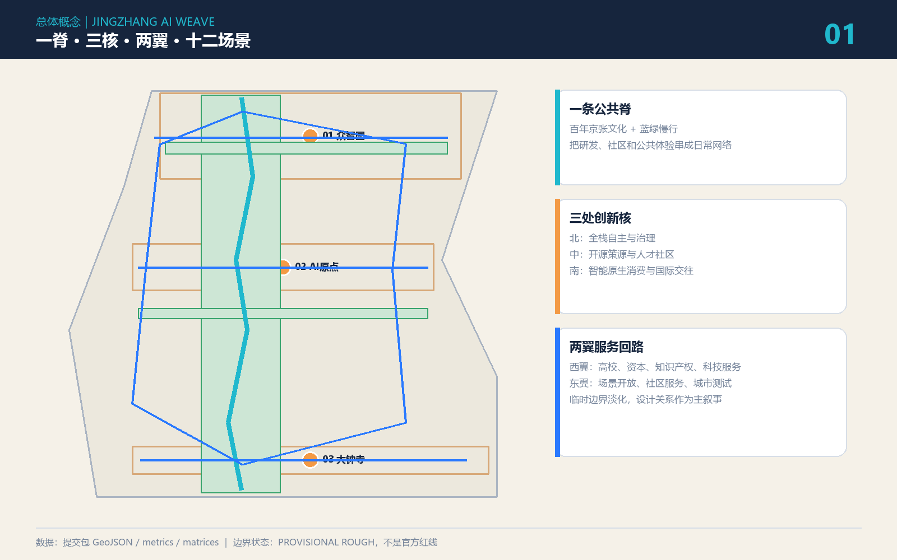
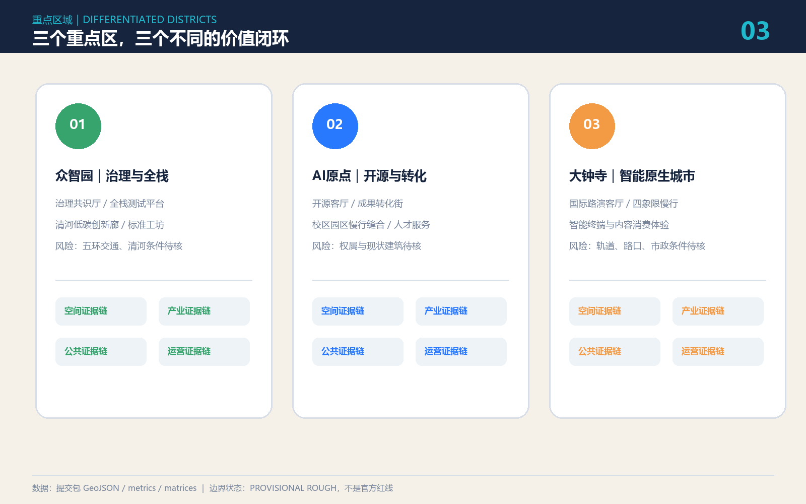
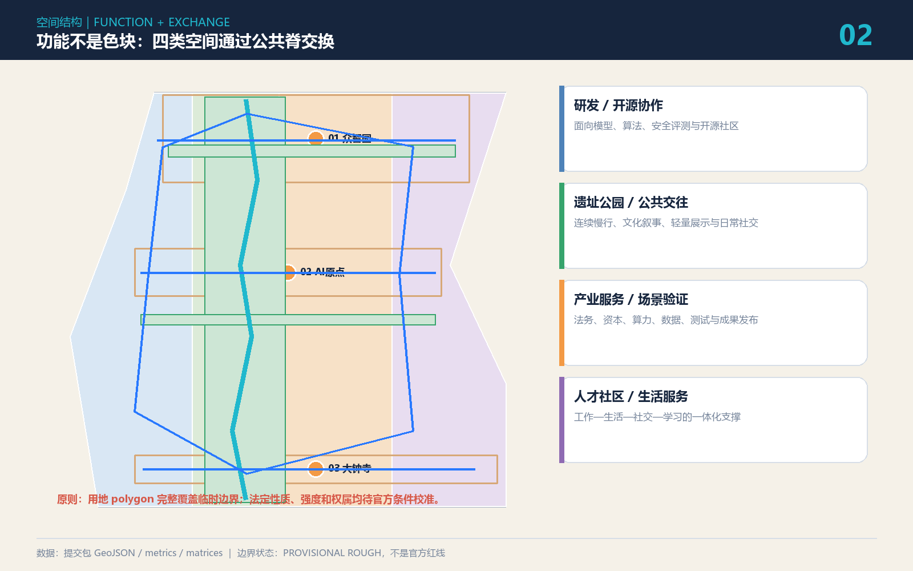
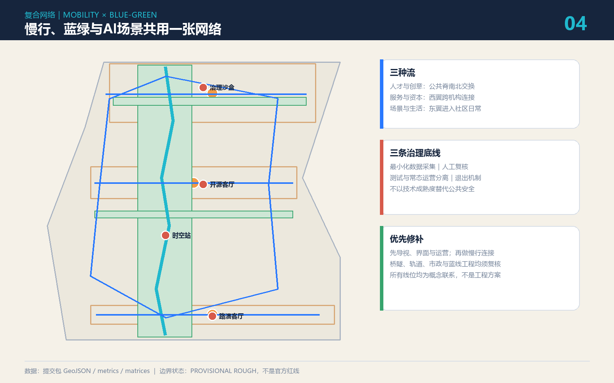

边界状态：PROVISIONAL ROUGH 当前总体范围与三处重点区仅用于 AI 生成、离线可视化和 intake 自检；不是官方红线、法定控规或工程实施依据。
总览地图

三层范围
43.6 km² 统筹研究
产业生态、三区两翼、未来城市与全球协同。
约 11.4 km² 总体设计
城市更新、交通市政、遗址公园与风貌。
368.4 ha 重点区域
众智园、AI原点、大钟寺的差异化详细设计。
重点区域

用地分区

交通慢行 · 蓝绿公共空间

建筑与更新项目
六类原型建筑
开源协作、成果转化、全栈测试、安全治理、国际路演、生活服务。均为概念基底，不对应已核实现状建筑。
六项空间抓手
慢行断点、清河界面、近校转化街、大钟寺四象限、端侧算力节点、全球活动路线。
AI 场景
开源发布安全治理沙盒端侧算力驿站AI慢行导航国际路演清河低碳廊成果转化街数据合规会客厅AI生活服务无障碍助手城市运维共审全球AI活动周
测试验证场景采用沙盒、数据最小化、人工复核与退出机制；不把试验写成已批准运营。
核心指标
临时范围11.41 km²
概念绿地比23.4%
概念公共空间比3.1%
任务覆盖
| 任务 | 方案响应 |
|---|---|
| agent.1 | 命名、Logo、一脊三核两翼 |
| agent.2 | 六个案例、八要素服务栈 |
| agent.3 | 12 场景、3 测试、6 用户 |
| agent.4 | 3 地标、组件库、荣誉展示 |
| agent.5 | 铁路—中关村—AI 三时叙事 |
| agent.6 | 年度活动、开发者社区、转化闭环 |
自检状态
目标：deterministic / spatial / visual / professional 四项 PASS。边界精度警示保留，不冒充官方数据。
来源
官方征集公告、清权智能体任务书、住建部城市设计与控规规则、自然资源部用地分类指南，以及六个案例的官方机构/运营方页面。详见 sources.json。
假设
官方 polygon、控规、现状建筑、权属、交通、市政、消防、文保和资金安排尚待补齐。空间落地均为概念建议或可供专业团队深化研究。